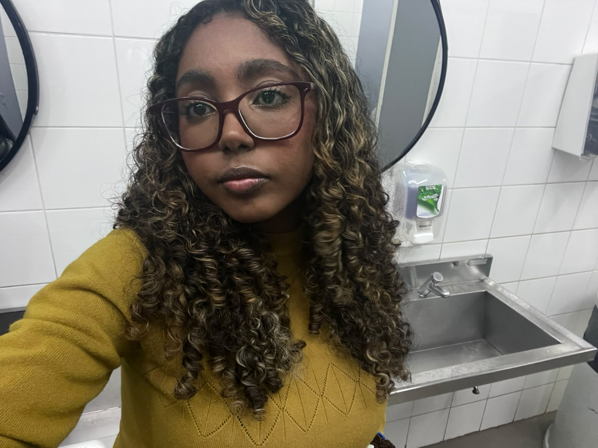
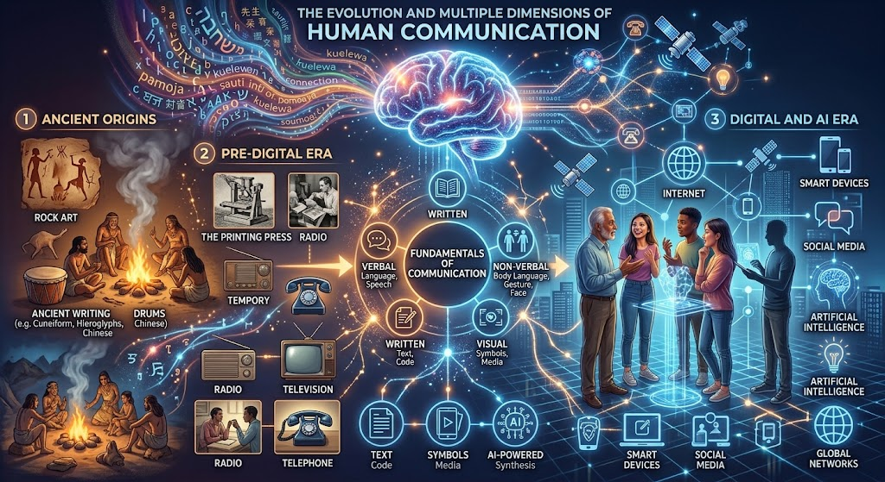

Giovana
Albuquerque
PUBLICIDADE E PROPAGANDA
Olá! Sou a Giovana Albuquerque, um(a) entusiasta da tecnologia e da criatividade. Apaixonado(a) pelas diversas formas de expressão humana, utilizo ferramentas de Inteligência Artificial Generativa para explorar e recriar as múltiplas dimensões da comunicação — da fala e linguagem corporal ao áudio, vídeo e música. Seja bem-vindo(a) ao meu portfólio!

Introdução
Comunicar-se não é apenas sobre o que é dito, mas sobre o que o outro compreende.
Comunicar-se é muito mais do que emitir sons, articular palavras ou preencher o silêncio. A comunicação é a ponte invisível que une mentes, a ferramenta essencial que moldou a civilização e a forma mais primordial de expressão da experiência humana.
Embora muitas vezes a reduzamos à fala e à escrita, a maior parte do que transmitimos acontece sem que uma única palavra seja dita. A comunicação é profundamente não verbal. Ela reside na microexpressão de um olhar, na postura dos ombros, na intensidade de um gesto, na velocidade da respiração e até no significado do silêncio. A linguagem corporal reflete o que o consciente tenta disfarçar; ela revela emoções, intenções e o estado real de quem se expressa. Quando a fala e o corpo entram em sintonia, a mensagem ganha autenticidade; quando divergem, a verdade encontra seu caminho pela linguagem do corpo.
A importância de se comunicar bem reside na própria necessidade de sobrevivência e conexão humana. Saber se expressar é o que permite alinhar expectativas, resolver conflitos, construir relacionamentos profundos, transmitir conhecimento e defender ideias. Por outro lado, a falha ou o ruído na comunicação é a raiz da maioria dos desentendimentos sociais e interpessoais.
Em um mundo saturado de informação e mediado por algoritmos e tecnologias inteligentes, a clareza, a empatia e a capacidade de escuta ativa se tornaram os pilares da comunicação moderna. Afinal, comunicar-se não é apenas sobre o que é dito, mas sobre o que o outro compreende — e, acima de tudo, sobre o impacto e a conexão que a mensagem é capaz de gerar.
Vídeo
Fala e linguagem corporal recriadas com Inteligência Artificial Generativa.
Áudio
A voz como forma de expressão.
Imagem
Imagem de destaque criada com IA.
Infográfico
Toque ou clique no infográfico para ver em tamanho real.

Animação
Movimento e narrativa em animação.
Música
Uma produção sonora autoral.